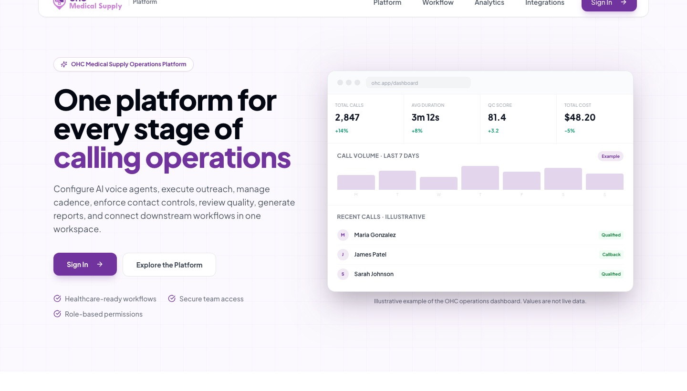

WORK OVERVIEW 05 · VOICE AI · HEALTHCARE OUTREACH
Voice AI with an operations backbone.
A multi-agent voice-AI platform for a US healthcare pharmacy: 80,000+ calls, AI quality control on every call, GoHighLevel sync, and the dashboards that run it.
- My work
- Full-stack & applied AI engineering
- Context
- Product Partnerships
- Scope
- US healthcare pharmacy · Jul 2025 – Aug 2026
- Focus
- Voice AI agents, QC & CRM automation
Build the product around the conversation.
THE CONTEXT
The work.
A US healthcare pharmacy needed to reach thousands of patients by phone and text without missed follow-ups, duplicate calls, or notes copied into the CRM by hand. I built the platform end to end: multiple AI voice agents, the backend that schedules and tracks every call and message, AI quality control for every recorded call, and the dashboards the team works in every day.
MY CONTRIBUTION
Where I contributed.
- Built a multi-agent voice-AI platform on Retell AI, with outbound, inbound, and processing agents, that has handled more than 80,000 calls.
- Ran 14-day outreach sequences of 7 calls and 6 texts for about 6,600 patients, with 650+ sequences running at once, do-not-call compliance, and race-safe enrollment.
- Built LangGraph quality-control agents that transcribe, separate speakers, and score every recorded call, averaging a 94%+ QC score.
- Built an MCP server with 29 tools that gives Claude live call, QC, and cost data.
- Added LLM post-call analysis that records each call’s outcome, sentiment, and urgency, and writes patient, insurance, and follow-up details back to GoHighLevel, with automatic retries, a provider-outage safety switch, and self-healing checks for stalled sequences.
- Integrated GoHighLevel (opportunities, pipelines, workflows, webhooks, tags), Monday.com, and Voxo through an event-driven backend, and built the React dashboards for calls, QC, and costs.
BY THE NUMBERS
The scale.
- 80,000+
- AI calls handled
- 94%
- average QC score on reviewed calls (94%+)
- 6,600
- patients in 14-day call and SMS outreach
- 29
- MCP tools for live call, QC, and cost data
TOOLS & TECHNOLOGIES
The stack.
- Frontend
- React 18TypeScriptViteTanStack QueryTailwind CSSshadcn/uiRecharts
- Backend
- PythonFastAPIPydanticSQLAlchemyCelery
- Data
- PostgreSQLRedisAlembic
- Cloud
- AWS LambdaAmazon SQSEventBridge SchedulerAWS SAM
- AI
- Retell AILangGraphElevenLabsAnthropic ClaudeOpenAI-compatible LLMsModel Context Protocol
- Integrations
- GoHighLevel CRMMonday.comVoxo
WHAT THE WORK SUPPORTS
The value.
- More than 80,000 calls handled by AI agents, with every call reviewed and scored.
- Every call ends with a recorded outcome and a CRM update, with no notes copied by hand.
- Follow-ups run on schedule, respect calling hours and do-not-call requests, and recover on their own when something stalls.
THE PRODUCT
See it live.

Public overview.
This page summarizes my contribution and the tools I used at a high level. Proprietary implementation details, company and partner data, and internal documentation are not disclosed.